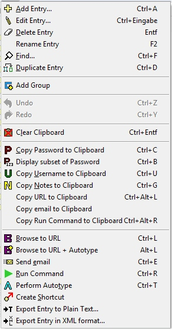
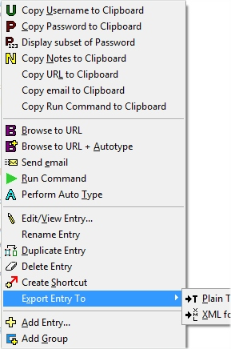
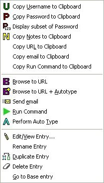
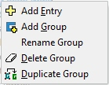

| Entry | Group | |
|  | |
Through the Edit Menu you can add, edit, use and organize user names and passwords. Note that the contents of this menu change according to what's selected in the main view (e.g., if you've selected and entry or a group). Also, some items may be disabled, as noted below.
Add a new user name and password. This is disabled if the
database is opened read-only.
See User
Names, Passwords, and Groups for more information.
When an entry is selected, Edit the selected user name and
password.
When a Group is selected (in Tree view), this will expand or collapse
the display of entries under the selected group. Editing an entry is
disabled if the database is opened read-only.
See User
Names, Passwords, and Groups for more information.
When an entry is selected, this will delete it. When a Group is selected (in Tree view), this will delete all entries under the selected group. Confirmation is requested if there is more than one entry in the selected group. This is disabled if the database is opened read-only.
Rename the selected entry (or group, in Tree view). This is disabled if the database is opened read-only.
Find an entry containing a given text. By default, all fields
except the Password field are searched.
See Searching for more
information.
Duplicates the selected entry. This is disabled if the database is opened read-only.
Create a new password group (e.g., Banking Passwords). This is disabled if the database is opened read-only.
Clear the clipboard's memory. This clears the clipboard of anything that was pasted there by Password Safe (password, username, notes, etc.). If the current contents of the clipboard did not come from Password Safe, then this will have no effect.
Copy the current selection's password to the clipboard.
Copy current selection's user name to the clipboard.
Copy the contents of current selection's notes field to the clipboard.
Copy the current selection's URL field to the clipboard.
When an entry is selected, and the entry has a URL associated with it, then this will invoke the default browser to the URL. If no entry is selected, or the selected entry's URL is blank, this command will be disabled.
Automatically input user name and password into the selected
input field.
See Using
Auto Type for more information.
When an entry is selected, this allows you to create a
reference to the entry, typically in another group. This is useful if
you have an entry that "belongs" under more than one group, but you
don't wish to duplicate data. A shortcut has a distinct icon associated
with it,  , and by
default has the name "shortcut to x",
where x is
the title of the original entry. Of course, you can edit the name, move
or delete the shortcut, just like a regular entry.
, and by
default has the name "shortcut to x",
where x is
the title of the original entry. Of course, you can edit the name, move
or delete the shortcut, just like a regular entry.
| Entry | Alias | Group | ||
|  |  |  |
Many of the functions in the Edit menu can also be reached by clicking the right mouse button on the corresponding entry or group. Here we'll describe only those functions that haven't been mentioned in the previous section.
This action displays a window that allows you to specify which characters of a password to display. This is useful for sites that ask for parts of a password to login. For example, a password might be "qAdm3ddENc", and you might be asked to enter the first, third, fifth and eighth letters. This window allows you to do this in a convenient manner: In the upper field you enter the positions of the password characters you want for the subset of the password. You can use spaces, commas or semi-colons to separate the positions. The corresponding characters of the password are shown in the lower field. To quit, please use the Esc key.
This item will only appear for a shortcut or alias entry. After clicking Go to Base entry the corresponding base entry will be selected.